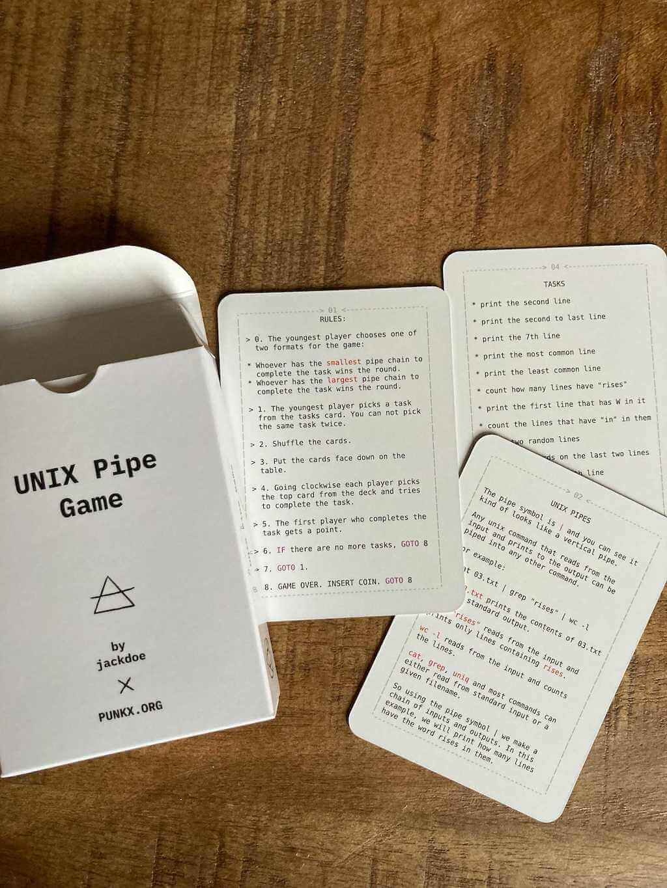
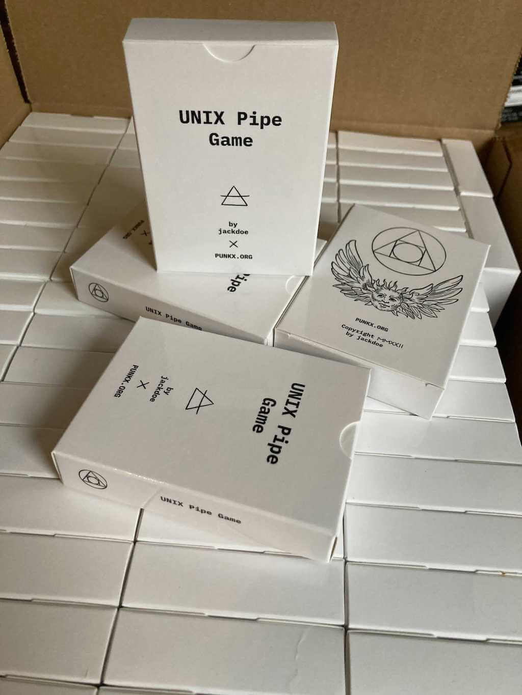

Programming Time, which is a game to teach python and some more fundamental algorithms, from hash tables to RSA
Programming Time, which is a game to teach python and some more fundamental algorithms, from hash tables to RSA
cat, grep, tail, head, wc, sort, uniq. The parent should show also show those commands in action the computer as well, if you do not have any UNIX system you can use jslinux in your browser.

RULES:
> 0. The youngest player chooses one of
two formats for the game:
* Whoever has the smallest pipe chain to
complete the task wins the round.
* Whoever has the largest pipe chain to
complete the task wins the round.
> 1. The youngest player picks a task
from the tasks card. You can not pick
the same task twice.
> 2. Shuffle the cards.
> 3. Put the cards face down on the
table.
> 4. Going clockwise each player picks
the top card from the deck and tries
to complete the task.
> 5. The first player who completes the
task gets a point.
> 6. IF there are no more tasks, GOTO 8
> 7. GOTO 1.
> 8. GAME OVER. INSERT COIN. GOTO 8
TASKS
* print the second line
* print the second to last line
* print the 7th line
* print the most common line
* print the least common line
* count how many lines have "rises"
* print the first line that has W in it
* count the lines that have "in" in them
* show two random lines
* count the words on the last two lines
* print the 7th and 8th line
* count the lines with !
* count the lines without !
* make a command chain that does not
print anything
This is how the card decks look:

If you are a parent teaching your kid, and is exploring more tools to help you, I made few other card games:
Programming Time, which is a game to teach python and some more fundamental algorithms, from hash tables to RSA
 The C Pointer Game - Pointers, Arrays and Strings, a game to teach kids to look at the computer memory and understand references and values
The C Pointer Game - Pointers, Arrays and Strings, a game to teach kids to look at the computer memory and understand references and values
 4917, a game to teach kids machine code and how the CPU works with memory and registers
4917, a game to teach kids machine code and how the CPU works with memory and registers
 The Unix Pipes Game - Process Substitution, an expansion of the Unix Pipes Game to teach process substitution and also:
The Unix Pipes Game - Process Substitution, an expansion of the Unix Pipes Game to teach process substitution and also: paste, tr, cut, bc
 RunLength Encoding for Kids, small cards "game" to explain runlength encoding
RunLength Encoding for Kids, small cards "game" to explain runlength encoding
 PUNK0 - The Function Composition Card Game, use cards to manipulate a list and use its values to win the game
PUNK0 - The Function Composition Card Game, use cards to manipulate a list and use its values to win the game
 PROJEKT: OVERFLOW, RISCV assembler boardgame
PROJEKT: OVERFLOW, RISCV assembler boardgame
 Programming for kids, a log of my journey of teaching my daughter how to code
Programming for kids, a log of my journey of teaching my daughter how to code